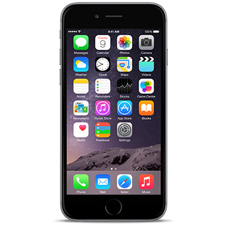

The Apple App Store launched in July 2008, a year after the first iPhone was released. It had 500 apps and, to many, was a revelation. It also signaled the dominance of the native mobile application. 10 million applications were downloaded in the first weekend.
As the number of people who own and use cell phones continues to grow, so does the use of smart phones. 91% of the US adult population currently owns a cell phone and of that 91%, 61% are smartphones. Further illustrating the popularity of smart phones 1 billion are expected to sell in the coming year, doubling that of the number of PCs. With over 10 billion mobile Internet devices expected to be in use by 2016, the mobile application industry will grow tremendously to match demand and keep up with ever-evolving technologies.